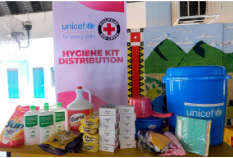
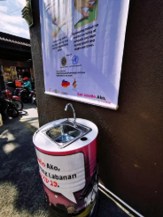

Ang "PROJECT MALINIS AT LIGTAS: Cogon Market Sanitation Drive" ay isang inisyatiba ng Sangguniang Kabataan (SK) ng Barangay 33 na naglalayong tugunan ang mababang antas ng kalinisan at kakulangan sa pasilidad ng malinis na tubig sa pampublikong pamilihan ng Cogon, Lungsod ng Cagayan de Oro. Dahil sa mataas na antas ng foot traffic at siksikan ng mga tindero at mamimili, mabilis ang pagkalat ng bakterya at masangsang na amoy sa lugar. Upang masolusyunan ito, maglalagay ang SK ng limang (5) foot-pedal handwashing barrels sa mga pangunahing pasukan ng palengke, magbibigay ng 100 hygiene kits (sabon, apron, at sanitizer) para sa mga nakarehistrong tindero, at magsasagawa ng oryentasyon ukol sa tamang sanitasyon sa paghawak ng pagkain. Ang proyekto ay isasagawa sa loob ng dalawang buwan na may kabuuang iminumungkahing badyet na Php 35,000 mula sa pondo ng SK.
Ang Cogon Market ay ang pangunahing sentro ng kalakalan sa Barangay 33 at ang pinakamalaking pampublikong pamilihan sa Lungsod ng Cagayan de Oro. Araw-araw, dinarayo ito ng libu-libong mamimili at daan-daang vendors na nagbebenta ng karne, isda, at gulay. Dahil sa dagsa ng tao at masikip na espasyo ng palengke, nahaharap ang Barangay 33 sa malaking suliranin sa pampublikong kalinisan at sanitasyon.
Sa kasalukuyan, walang maayos at madaling ma-access na libreng pasilidad para sa paghuhugas ng kamay ang mga tindero at mamimili sa mga pangunahing pasukan ng pamilihan. Ang kawalan ito ng maayos na pasilidad ng malinis na tubig, kasabay ng hindi wastong pagtatapon ng mga basurang nagmumula sa palengke, ay nagdudulot ng masangsang na amoy at nagpapataas ng peligro ng pagkalat ng mga nakahahawang sakit at foodborne illnesses. Upang mapanatili ang kaligtasan ng pagkain at kalusugan ng buong komunidad, kinakailangan ang isang direktang interbensyon mula sa Sangguniang Kabataan upang makapagpatayo ng mga angkop na pasilidad ng sanitasyon at makapagbigay ng wastong edukasyon sa mga naghahanapbuhay sa Cogon Market.
Batay sa masusing pagsusuri sa kalagayan ng Cogon Market, itinuturing na isang pangunahing prayoridad ang agarang paglalagay ng mga accessible at madaling gamiting pasilidad sa paghuhugas ng kamay. Kinakailangan din ang pamamahagi ng mga batayang kagamitang pangkalinisan upang matiyak ang pagsunod sa mga pamantayan ng pampublikong kalusugan at sanitasyon. Ang interbensyong ito ay mahalaga upang maprotektahan ang kapakanan ng mamimili at mapanatili ang kaligtasan ng pagkain ibinebenta sa pampublikong pamilihan.
Upang matugunan ang mga nabanggit na suliranin, ang Sangguniang Kabataan (SK) ng Barangay 33 ay magpapatupad ng isang komprehensibong inisyatiba sa sanitasyon. Magtatayo ang SK ng limang (5) hands-free / foot-pedal handwashing barrels sa mga strategic na pasukan ng Cogon Market upang magpaghugas ng kamay ang mga tao nang hindi kailangang hawakan ang gripo, na nakatutulong upang maiwasan ang pagkalat ng mikrobyo. Bukod dito, magrerepad at magmamamahagi ang SK ng 100 hygiene kits (sabon, apron, at hand sanitizer) sa mga nakarehistrong ambulant at sidewalk vendors. Kasabay nito, magsasagawa rin ng isang oryentasyon ukol sa tamang sanitasyon sa paghawak ng pagkain at wastong pagtatapon ng basura sa pakikipagtulungan ng mga eksperto sa kalusugan.
Pangunahan ng Sangguniang Kabataan (SK) ng Barangay 33 ang pamamahala at pagpapatupad ng proyektong ito. Makikipagtulungan ang SK sa Barangay Health Workers (BHW) upang magbigay ng oryentasyon sa kalusugan, at sa Cogon Market Vendor Association upang masigurong aalagaan at gagamitin nang maayos ng mga tindero ang mga hugasan ng kamay.
Mapataas ang antas ng sanitasyon at mabawasan ang banta ng cross-contamination ng pagkain sa Cogon Market sa pamamagitan ng pagtatayo ng mga pasilidad sa paghuhugas ng kamay, pamamahagi ng kagamitang pangkalinisan, at pagbibigay ng edukasyon sa kalusugan sa huling bahagi ng taong 2026.
Pangunahing Benepisyaryo: Ang 100 nakarehistrong ambulant at sidewalk vendors ng Barangay 33 sa Cogon Market. Sila ay direktang makatatanggap ng libreng hygiene kits, makakakuha ng decal stickers para sa kanilang pwesto upang tumaas ang tiwala ng mamimili, at makagagamit ng mga bagong foot-pedal handwashing stations.
Pangalawang Benepisyaryo: Ang libu-libong mamimili at residente ng Lungsod ng Cagayan de Oro na pumupunta araw-araw sa Cogon Market. Makikinabang sila sa mas malinis, ligtas, at maayos na pagproseso ng mga pagkain kanilang binibili, pati na rin sa pagkakaroon ng libreng hugasan ng kamay sa palengke.
A. Gawin ang proyektong ito sa loob ng walong linggo sa huling bahagi ng taong 2026. Sa unang linggo, kakausapin ang mga lider ng tindero sa Cogon Market at bibilihin ang mga drum, gripo, piyesa para sa pedal, at mga gamit para sa 100 hygiene kits at stickers. Sa ikalawang linggo, bubuoin ang limang foot-pedal na hugasan ng kamay at ikakabit ang mga ito sa limang pasukan ng palengke na malapit sa linya ng tubig at kanal. Sa ikatlong linggo, pupuntahan ng mga Barangay Health Worker at bawat pwesto ng tindero sa konti ang tao para sa mabilisang 10-minutong usapan tungkol sa kalinisan, kasabay ng pamimigay ng libreng hygiene kits at stickers. Sa ika-apat hanggang ikawalong linggo, magpapatuloy ang lingguhang pagtingin sa mga hugasan at paglalagay ng bagong sabon kasama ang mga lider ng tindero.
B. Hahatiin ang mga gamit at tao sa tatlong bahagi. Una, ang limang foot-pedal na hugasan ay ilalagay sa limang pasukan ng Cogon Market na may gripo para madaling lagyan ng tubig at malapit sa kanal para hindi bumaha ang paligid. Pangalawa, ang 100 hygiene kits at stickers ay para lamang sa mga nakarehistrong tindero sa kalsada at bangketa ng Barangay 33 na gustong makinig sa mabilisang usapan sa kalinisan. Pangatlo, ang mga Barangay Health Worker at SK volunteers ang mag-iikot sa mga pwesto ng tindero, habang ang mga lider ng tindero ang magbabantay at maglalagay ng sabon sa mga hugasan araw-araw.
C. Ang kabuuang Php 35,000 na badyet ay hati sa apat na bahagi. Ang Php 14,000 ay gagastusin sa pagbili ng mga drum, tubo, pedal, at gripo para sa limang hugasan. Ang Php 14,000 ay para sa 100 hygiene kits at tote bags na may laman na apron, hairnet, dalawang sabon, at hand sanitizer. Ang Php 4,000 ay para sa paggawa ng mga Malinis at Ligtas na Tindahan stickers, sertipiko, at meryenda habang nag-iikot. Ang natitirang Php 3,000 ay hahatiin sa Php 2,000 para sa tulong-pamasahe o allowance ng mga volunteers at BHW, at Php 1,000 bilang tabi na pera kung sakaling may kailangang ayusin o palitang piyesa.
| Aytem: | Gastos: | Karamihan: |
|---|---|---|
| Washing Station | Php 14,000 | 5 pcs. |
| Personal Protective Equipment (Apron, Gloves, Masks, etc.) | Php 14,000 | 100pcs bawat piraso. |
| Materyales sa Kampanya at Insentibo | Php 4,000 | Para sa 100 na tindahan (o kung ilang tindahan ang iikutan) |
| Tulong-Pamasahe at Allowance ng mga Boluntir | Php 2,000 | Para sa mga BHW at SK Volunteers |
| Pondo sa Pagpapanatili at Pag-repara | Php 1,000 | Kontingensiya para sa mga piyesa |
| Kabuuang Badyet | Php 35,000 |
A. Magsasagawa ng lingguhang pagmomonitor ang SK Youth Volunteers at Barangay Health Workers sa loob ng dalawang buwan sa Cogon Market. Sa bawat pagbisita, gagamit sila ng simpleng checklist upang tingnan kung buo at gumagana ang limang foot-pedal na hugasan, kung may sapat na tubig at sabon, at kung ginagamit ng mga tindero ang kanilang mga ibinigay na hygiene kit at stickers. Itatala rin sa checklist kung may mga sirang piyesa tulad ng gripo o pedal upang agad itong maipaayos gamit ang pondo ng proyekto. Ang mga ulat mula sa pagmomonitor ay isusumite sa Barangay Council at sa lider ng Cogon Market Vendor Association bawat katapusan ng buwan.
B. Upang mapanatiling gumagana ang proyekto kahit matapos na ang dalawang buwan, opisyal na ililipat ang pang-araw-araw na pangangalaga at paglalagay ng sabon sa mga lider ng Cogon Market Vendor Association. Ang barangay at SK naman ang mamamahala sa pag-ayos ng mga sirang tubo o gripo gamit ang contingency fund o pondo ng barangay para sa maintenance. Sa pamamagitan ng pagtutulungan ito, masisigurong magagamit ng komunidad ang mga hugasan sa mahabang panahon.
Ang proyektong ito ay pinangunahan ng SK ng Barangay 33 kasama ang iba pang tulong sa komunidad. Ang SK Chairperson at mga Konsehal ang mamamahala sa buong proyekto, sa pag-aayos ng pera, at sa pakikipag-usap sa mga lider ng Cogon Market. Ang SK Logistics Committee naman ang bibili ng mga drum, gripo, at mga gamit para sa 100 hygiene kits at stickers. Ang mga Barangay Health Worker at SK Youth Volunteers ang mag-iikot sa palengke para sa mabilisang usapan tungkol sa kalinisan at pamimigay ng libreng hygiene kits. Ang mga lider naman ng mga tindero sa Cogon Market ang magbabantay sa limang hugasan araw-araw at maglalagay ng sabon sa kani-kanilang lugar.

Larawan 1: Pamamahagi at pagpapakita ng mga Hygiene Kits at kagamitan.

Larawan 2: Naitalang foot-pedal handwashing station sa lokasyon.
Barangay 33 Sangguniang Kabataan. (2024). Comprehensive Youth Development Plan (CYDP) 2024–2026. Lungsod ng Cagayan de Oro.
Department of Health. (2020). Guidelines on sanitation and handwashing in public markets. Department of Health Philippines.
Department of the Interior and Local Government. (2018). Sangguniang Kabataan reform act of 2015: Resource guide for local youth development. DILG.
World Health Organization. (2020). Water, sanitation, hygiene, and waste management for public health emergencies. World Health Organization.
UNICEF Philippines. (2020, September 9). Families heavily affected by COVID-19 receive hygiene kits. UNICEF. https://www.unicef.org/philippines/stories/families-heavily-affected-covid-19-receive-hygiene-kits